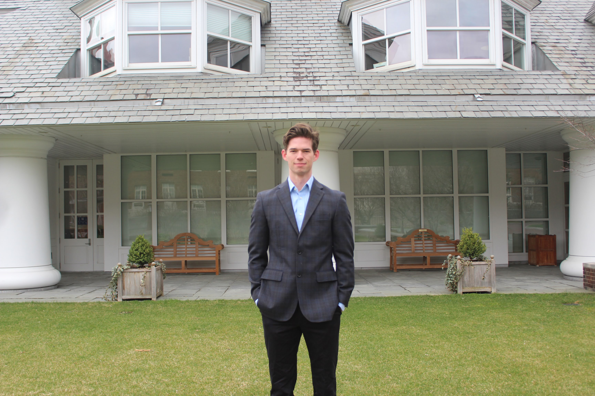

About Me
A closer look at my background, education, and inspirations.

Background and Inspiration
My passion for medical technology and robotics began in high school through the ASP summer program at Saint Paul’s, where I worked with the Go Baby Go Foundation to modify toy cars for toddlers with special needs. Later, I joined Digi Digits, a club in college where we created 3D-printed prosthetics for children. During my undergraduate studies at Penn State, I also served as a teaching assistant for the Engineering Design course, teaching SolidWorks and guiding students through design projects. These experiences inspired me to pursue further education and research in medical robotics.

After graduate school, I worked at ASML as a Mechanical Design Engineer, contributing to the development of a high-precision metrology machine. My work involved complex mechanical designs, including flexures, and demanded extremely tight tolerances to achieve the system’s performance goals.
I’m now a Mechanical Design Engineer at DEKA Research & Development, where I continue to design and develop electromechanical medical devices that have real impact on people’s lives.
Education
-
Bachelor of Science in Mechanical Engineering
Penn State University — 2021
Minor in Mechatronics · GPA: 3.8 -
Master of Science in Mechanical Engineering
Penn State University — 2023
GPA: 4.0
Software and Programming
SolidWorks, Siemens NX, AutoCAD, Fusion 360, ANSYS, Mecway, MATLAB, Python, JavaScript, C++, Arduino, LabVIEW, Multisim.